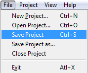
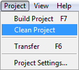
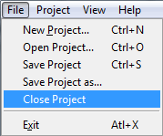
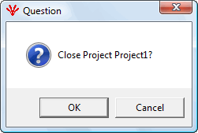

Save Project
To save a project, select from top menu-bar, File -> Save Project as shown in Figure

Project can also be saved by clicking icon in the icon bar
Save project will save the following files in the project directory under octx folder
One octx file for each CN. Name of the file is the Node Id of the CN
One octx file for MN. Name of the file is 240(NodeId of MN)
Clean Project
Clean project will delete cdc and xap files from the project folder. To clean the project, select from the top menu Project ->Clean Project as shown below

This can also be done by clicking icon in the icon bar.
Close Project
To close the project, select from the top menu bar, File -> CloseProject as shown below

A pop-up appears as shown below. Click 'OK' to close the project.

If the project is not saved, a warning will appear as shown below.